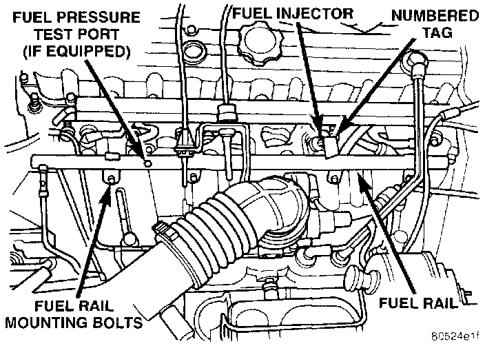

Fuel Pressure Test - With Test Port
FUEL PUMP PRESSURE TESTNOTE: Use this test in conjunction with the Fuel Pump Capacity Test and Fuel Pressure Leak Down Test.
Check Valve Operation: The electric fuel pump outlet contains a one-way check valve to prevent fuel flow back into the tank and to maintain fuel supply line pressure (engine warm) when pump is not operational. It is also used to keep the fuel supply line full of gasoline when pump is not operational. After the vehicle has cooled down, fuel pressure may drop to 0 psi (cold fluid contracts), but liquid gasoline will remain in fuel supply line between the check valve and fuel injectors. Fuel pressure that has dropped to 0 psi on a cooled down vehicle (engine off) is a normal condition. when the electric fuel pump is activated, fuel pressure should immediately rise to specification.
Fig. 7 Fuel Pressure Test Port:

NOTE: The fuel pressure test port is used on certain engines only. If equipped, the test port will be located on the fuel rail (Fig. 7). A sealing cap is screwed onto the test port.
All fuel systems are equipped with a fuel tank module mounted, combination fuel filter/fuel pressure regulator. The fuel pressure regulator is not controlled by engine vacuum.
WARNING: The fuel system is under constant fuel pressure even with the engine off. Before disconnecting fuel line at fuel rail, this pressure must be released. Refer to the fuel system pressure release procedure.
1. Remove the protective cap at the fuel rail test port. Connect the 0-14 kPa (0-60 psi) fuel pressure gauge (from gauge set 5069) to the test port pressure fitting on the fuel rail.
2. Start and warm the engine and note pressure gauge reading. Fuel pressure should be 339 kPa +/- 34 kPa (49.2 psi +/- 5 psi) at idle.
3. If engine runs but pressure is below 44.2 psi, check for a kinked fuel supply line somewhere between fuel rail and fuel pump module. If line is not kinked, replace fuel pump module assembly.
4. If operating pressure is above 54.2 psi, electric fuel pump is OK, but fuel pressure regulator is defective. Replace fuel filter/fuel pressure regulator.